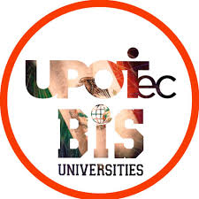
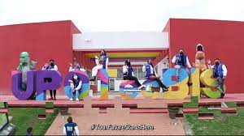

LA UNIVERSIDAD POLITÉCNICA DE OTZOLOTEPEC, ACTUALMENTE OFRECE 3 PROGRAMAS ACADÉMICOS EN MODALIDAD BILINGÜE, INTERNACIONAL Y SUSTENTABLE (BIS), ASÍ COMO UNA MAESTÍA Y UN DIPLOMADO:
Ingeniería en Tecnologías de Manufacura (BIS)
Ingeniería en Tecnologías de Manufacura (BIS)
PERFIL DE EGRESO
El Ingeniero en Tecnologías de Manufactura bilingüe será una persona capaz de diseñar, implantar, automatizar procesos de manufactura, así como, administrar y evaluar proyectos en el ámbito de su competencia.
Licenciatura en Administración y Gestión Empresarial
Licenciatura en Administración y Gestión Empresarial
PERFIL DE EGRESO
El licenciado en Administración y Gestión Empresarial será una persona bilingüe con capacidades gerenciales altamente competitivos que respondan a los desafíos a los que se enfrentan las organizaciones en ambientes de incertidumbre, dirigiendo eficazmente sus recursos y funciones, a través de una visión vanguardista para diseñar, evaluar y aplicar estrategias que permitan innovar o mejorar procesos en las organizaciones en un marco de sustentabilidad
Ingeniería Química
ingenieria quimica
PERFIL DE EGRESO
El Ingeniero en Química bilingúe será una persona con alto sentido de responsabilidad integral, capaz de desempeñarse exitosamente aplicando la tecnología para formular y resolver problemas técnicos y administrativos, habilitándolos con un perfil emprendedor para el desarrollo de nuevas empresas.
CONOCE MI UNIVERSIDAD

Licenciatura en Administración y Gestión Empresarial